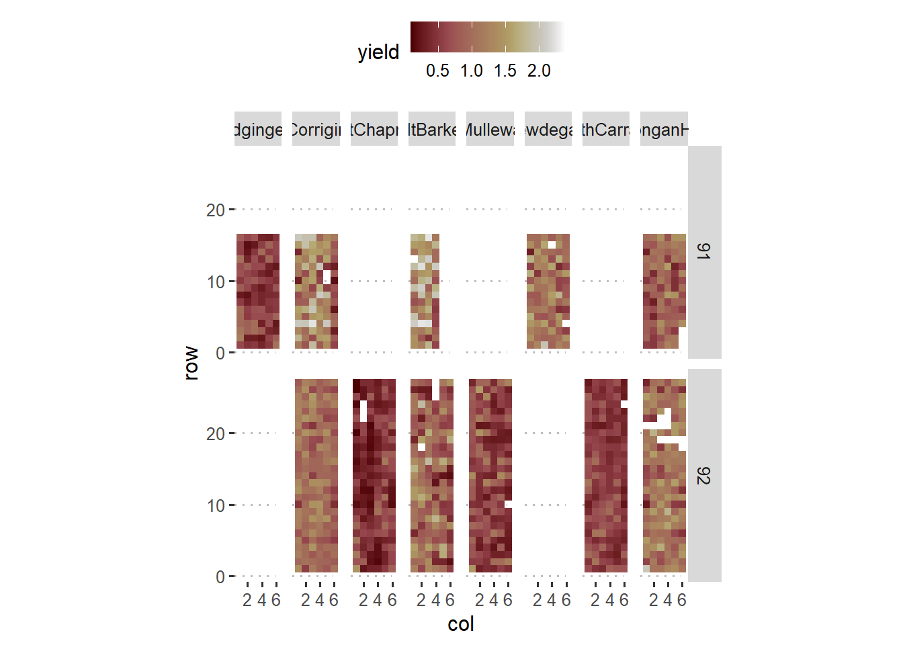
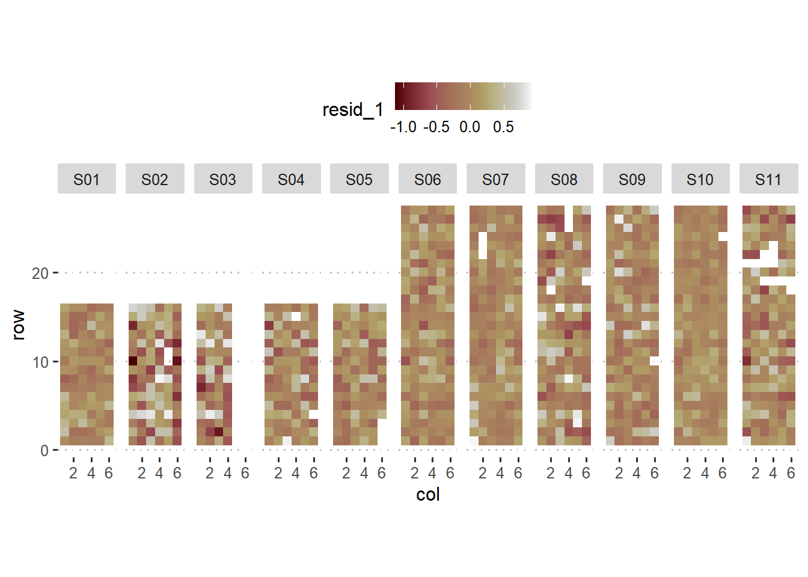
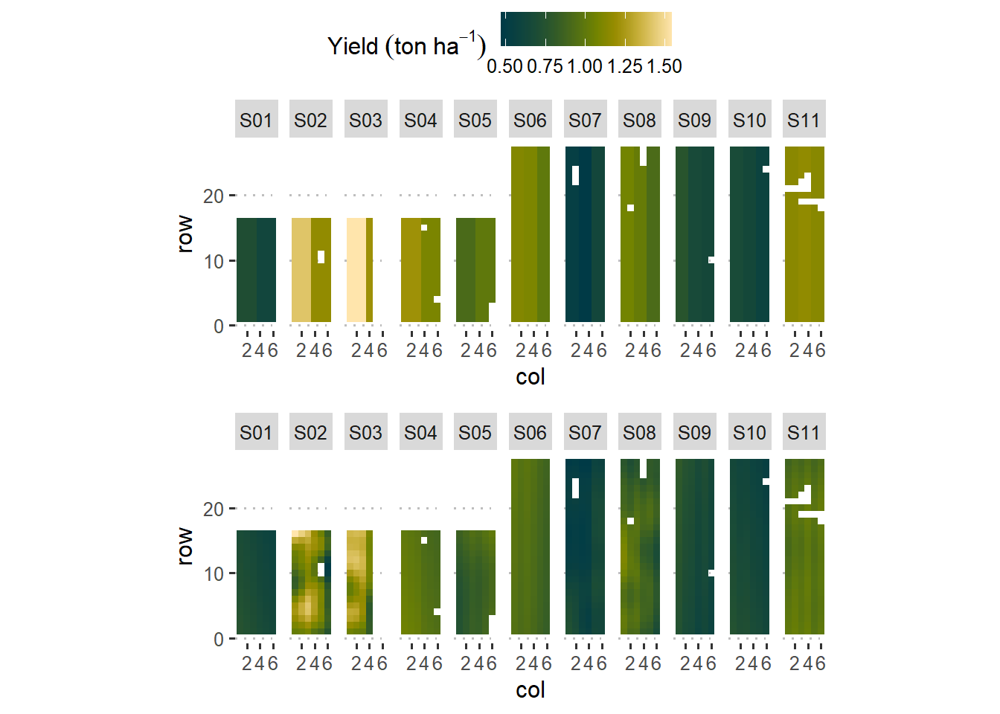
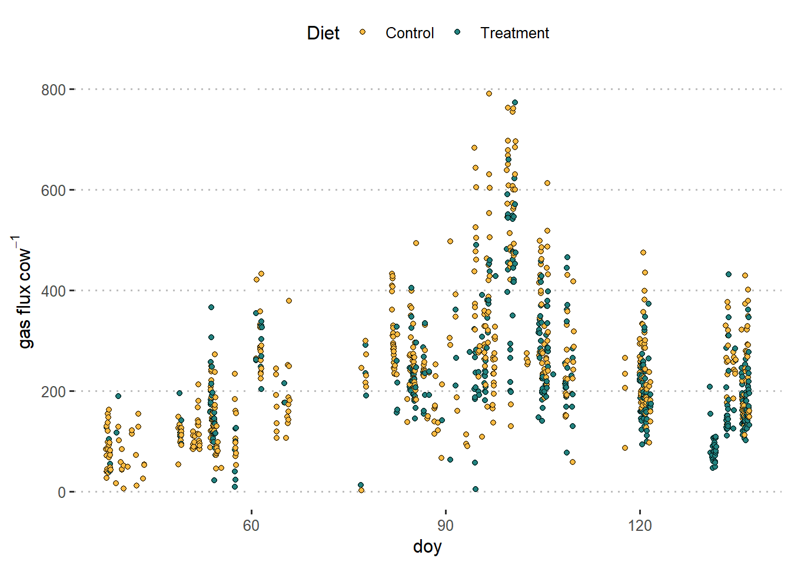
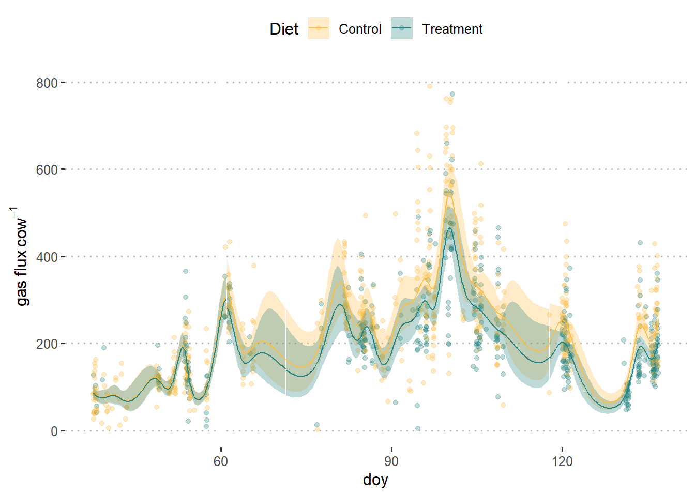

Day 18 Applications of Smoothing Splines
18.2 Splines review
- Piecewise polynomial functions
- pros of local approximation of polynomials without cons of global approximation of polynomials
- maximal smoothness
- PROS:
- Flexibility
- No need to specify functional
- CONS:
- Less interpretable
- Computational cost
- Flexibility must be selected by adjusting the smoothing parameter \(\lambda\)
We can represent the data with the equation \[y_i = \beta_0 + f(x_i) + \varepsilon_i, \\ \varepsilon_i \sim N(0, \sigma^2),\] where \(f(\cdot)\) is estimated with the function \(g(\cdot)\) that minimizes \(||\mathbf{y}-\mathbf{g}||^2 + \lambda J_{md}(g)\). Reember that \(\mathbf{g} = [g(\mathbf{x}_1), g(\mathbf{x}_2), \dots, g(\mathbf{x}_n)]'\) \(J_{md}(g)\) is a penalty funcitonal that regulates the wiggliness of \(g(\cdot)\) and \(\lambda\) controls the smoothness of \(g(\cdot)\).
Importance of basis dimension
- Impact on flexibility of the model
- Checking if basis dimension is too small (residuals vs. neighbours)
- Comparing effective degrees of freedom with basis dimension
- Implemented in
gam.checkk'gives the maximum possible EDF for that smooth- compare
k'withEDFin a model
18.3 Applications of splines
library(tidyverse) # data wrangling
library(ggpubr) # data viz
library(lme4) # fit LMMs (only supports simple random effects - sompound symmetry)
library(mgcv) # fit GAMs (supports both random effects and splines)18.3.0.1 Spatial effects
Traditional approach
The data below come from a multi-environment experiment that studies yield of lupin for different genotypes.
dat <- drop_na(agridat::verbyla.lupin)
dat %>%
ggplot(aes(col, row))+
geom_tile(aes(fill = yield))+
facet_grid(year~loc)+
coord_fixed()+
scico::scale_fill_scico()+
theme_pubclean()
A (typically) reasonable model could be \[y_{ijk} \sim N(\mu_{ijk}, \sigma^2),\\ \mu_{ijk} = \mu_0 + T_i + l_j + b_{k(j)}, \\ l_j \sim N(0, \sigma^2_l), \\ b_{k(j)} \sim N(0, \sigma^2_b),\] where:
- \(y_{ijk}\) is the observed yield and arises from a normal distribution with mean \(\mu_{ijk}\) and variance \(\sigma^2\),
- \(\mu_0\) is the overall mean yield for all fields,
- \(l_j\) is the (random) effect of the \(j\)th field that arises from a normal distribution with variance \(\sigma^2_l\) (note that \(\mu_0 + l_j\) is the overall yield for the \(j\)th field),
- \(b_{k(j)}\) is the (random) effect of the \(k\)th block in the \(j\)th field that arises from a normal distribution with variance \(\sigma^2_b\),
- \(T_i\) is the treatment effect of the \(i\)th genotype.
## 0.02 sec elapsed## Groups Name Std.Dev.
## rep:site (Intercept) 0.10140
## site (Intercept) 0.27897
## Residual 0.30284dat %>%
ggplot(aes(col, row))+
geom_tile(aes(fill = resid_1))+
facet_grid(~site)+
coord_fixed()+
scico::scale_fill_scico()+
labs(main = "Residuals assuming within-block homogeneity")+
theme_pubclean()
Relaxing an assumption from the traditional approach
Alternatively, we could add an element to the linear predictor. Previously, we said \(\mu_{ijk} = \mu_0 + T_i + l_j + b_{k(j)}\).
Potential risks of assuming within-block homogeneity:
- loss of power
Alternative: expand the linear predictor into \(\mu_{ijk} = \mu_0 + T_i + l_j + b_{k(j)} + f(\mathbf{s}_{ijk})\), where \(\mathbf{s}_{ijk}\) is a vector of the coordinates of the observation \(ijk\), and \(f(\cdot)\) is a smooth function of space. We consider \(f(\cdot)\) can be approximated using smoothing splines.
tictoc::tic()
m2 <- gam(yield ~ gen + s(rep, site, bs = "re") + s(row, col, bs = "tp", by = site), data = dat)
tictoc::toc()## 8.49 sec elapsed##
## Family: gaussian
## Link function: identity
##
## Formula:
## yield ~ gen + s(rep, site, bs = "re") + s(row, col, bs = "tp",
## by = site)
##
## Parametric coefficients:
## Estimate Std. Error t value Pr(>|t|)
## (Intercept) 0.89485 0.04871 18.372 < 2e-16 ***
## genGungurru -0.02161 0.03232 -0.669 0.503922
## genIllyarrie -0.12520 0.03255 -3.846 0.000126 ***
## genMerrit -0.01378 0.03300 -0.417 0.676425
## genMyallie -0.07358 0.03716 -1.980 0.047935 *
## genUnicrop -0.18396 0.03238 -5.681 1.65e-08 ***
## genWarrah -0.17843 0.03243 -5.501 4.54e-08 ***
## genYandee -0.15374 0.03242 -4.742 2.35e-06 ***
## genYorrel -0.09957 0.03254 -3.060 0.002256 **
## ---
## Signif. codes: 0 '***' 0.001 '**' 0.01 '*' 0.05 '.' 0.1 ' ' 1
##
## Approximate significance of smooth terms:
## edf Ref.df F p-value
## s(rep,site) 21.824 27.000 26.549 < 2e-16 ***
## s(row,col):siteS01 2.000 2.000 0.911 0.402579
## s(row,col):siteS02 17.825 19.763 5.263 < 2e-16 ***
## s(row,col):siteS03 12.999 15.385 2.526 0.000966 ***
## s(row,col):siteS04 2.000 2.000 0.757 0.469094
## s(row,col):siteS05 3.745 4.893 1.816 0.126446
## s(row,col):siteS06 2.000 2.000 1.288 0.276202
## s(row,col):siteS07 9.206 12.532 1.016 0.432038
## s(row,col):siteS08 13.272 17.680 2.008 0.007607 **
## s(row,col):siteS09 2.000 2.000 3.518 0.029936 *
## s(row,col):siteS10 2.000 2.000 2.655 0.070672 .
## s(row,col):siteS11 6.062 8.237 0.901 0.519681
## ---
## Signif. codes: 0 '***' 0.001 '**' 0.01 '*' 0.05 '.' 0.1 ' ' 1
##
## R-sq.(adj) = 0.536 Deviance explained = 57%
## GCV = 0.087403 Scale est. = 0.080877 n = 1392dat %>%
ggplot(aes(col, row))+
geom_tile(aes(fill = resid_2))+
facet_grid(~site)+
coord_fixed()+
labs(main = "Residuals relaxing the assumption of within-block homogeneity")+
scico::scale_fill_scico()+
theme_pubclean()An intuitive visualization of splines
d_predict <- dat %>%
transmute(gen = "Merrit",
row, col, site, rep)
d_predict$yhat_1 <- predict(m1, newdata = d_predict)
d_predict$yhat_2 <- predict(m2, newdata = d_predict)sp_effects_trad <-
d_predict %>%
ggplot(aes(col, row))+
geom_tile(aes(fill = yhat_1))+
facet_grid(~site)+
coord_fixed()+
scico::scale_fill_scico(palette = "bamako")+
labs(fill = expression(Yield~(ton~ha^{-1})))+
theme_pubclean()
sp_effects_splines <-
d_predict %>%
ggplot(aes(col, row))+
geom_tile(aes(fill = yhat_2))+
facet_grid(~site)+
coord_fixed()+
scico::scale_fill_scico(palette = "bamako")+
labs(fill = expression(Yield~(ton~ha^{-1})))+
theme_pubclean()
ggarrange(sp_effects_trad, sp_effects_splines,
common.legend = T,
ncol = 1)
- Some thoughts on missing data imputation.
- Use of multilevel models for missing data imputation
- Use of GAM models for missing data imputation
18.3.0.2 Modeling time
The data below come from an experiment aiming to test whether a diet treatment in cows can reduce the (GH) gas emmission.
The experiment consists of 4 groups of cows that were hosted turns in the same facility. Each group contained similar cows and they were randomly divided into 2 subgroups. Those subgroups were assigned to a corral and each corral was assigned with a diet treatment.
dat <- read.csv("../../data_confid/fluxes.csv")
dat %>%
ggplot(aes(doy, GHG_flux))+
geom_point(aes(fill = diet), shape= 21)+
scale_fill_manual(values = c("#FFBC42", "#218380"))+
labs(fill ="Diet",
y = expression(gas~flux~cow^{-1}))+
theme_pubclean()
We can generally describe any point as \[y_{ijk} \sim D(\mu_{ijk}, \psi), \\ g(\mu_{ijk}) = \eta_{ijk}\] where \(y_{ijk}\) is the observation of the flux per head for the \(i\)th diet, \(j\)th group and \(l\)th moment.
- Discussion of predictor \(\eta_{ijk}\)
We can, for example, use \[\eta_{ijk} = \mu_0 + D_i + f(t_{ij}) + b_{k} + u_{ik},\]
where
- \(\mu_0\) is the overall mean,
- \(D_i\) is the effect of the \(i\)th diet,
- \(f(t_{ij})\) is the function of time,
- \(b_{k}\) is the effect of the \(k\)th group.
dat$diet_group <- factor(paste(dat$diet, dat$group))
m1 <- gam(GHG_flux ~ diet +
s(doy, bs = "tp", k =35) +
s(group, bs = "re") +
s(diet_group, bs = "re") ,
data = dat,
family = Gamma(link = "log"))
dat_plot <- expand.grid(doy = seq(min(dat$doy), max(dat$doy), length.out = 1000),
diet = unique(dat$diet)) %>%
mutate(group = case_when(doy <35 ~ 1,
between(doy, 37, 61) ~ 2,
between(doy, 61, 71.4) ~ 3,
between(doy, 71.4, 117.8) ~ 4,
doy>117.8 ~ 5,
TRUE ~ 6)) %>%
filter(group %in% unique(dat$group)) %>%
mutate(across(c( diet), ~as.factor(.)),
diet_group = factor(paste(diet, group)))
pred_plot <- predict(m1, newdata = dat_plot, type = "link", se = T)
dat_plot$pred_m1 <- pred_plot$fit
dat_plot$se_m1 <- pred_plot$se.fit
dat_plot %>%
ggplot(aes(doy, exp(pred_m1)))+
geom_point(aes(doy, GHG_flux, color = diet), data = dat, alpha = .3)+
geom_ribbon(aes(group = paste(diet, group),
fill = diet,
ymin = exp(pred_m1 - (se_m1*1.96)) , ymax = exp(pred_m1 +(se_m1*1.96))),
alpha = .3)+
geom_line(aes(group = paste(diet, group), color = diet))+
scale_fill_manual(values = c("#FFBC42", "#218380"))+
scale_color_manual(values = c("#FFBC42", "#218380"))+
coord_cartesian(ylim = c(0, 800))+
theme_pubclean()+
labs(fill ="Diet", color = "Diet",
y = expression(gas~flux~cow^{-1}))
##
## Family: Gamma
## Link function: log
##
## Formula:
## GHG_flux ~ diet + s(doy, bs = "tp", k = 35) + s(group, bs = "re") +
## s(diet_group, bs = "re")
##
## Parametric coefficients:
## Estimate Std. Error t value Pr(>|t|)
## (Intercept) 5.43170 0.03345 162.388 < 2e-16 ***
## dietTreatment -0.13537 0.04848 -2.792 0.00534 **
## ---
## Signif. codes: 0 '***' 0.001 '**' 0.01 '*' 0.05 '.' 0.1 ' ' 1
##
## Approximate significance of smooth terms:
## edf Ref.df F p-value
## s(doy) 3.217e+01 33.67 22.911 < 2e-16 ***
## s(group) 1.245e-05 1.00 0.000 0.52837
## s(diet_group) 2.212e+00 6.00 1.833 0.00177 **
## ---
## Signif. codes: 0 '***' 0.001 '**' 0.01 '*' 0.05 '.' 0.1 ' ' 1
##
## R-sq.(adj) = 0.585 Deviance explained = 58%
## GCV = 0.14934 Scale est. = 0.12529 n = 1000